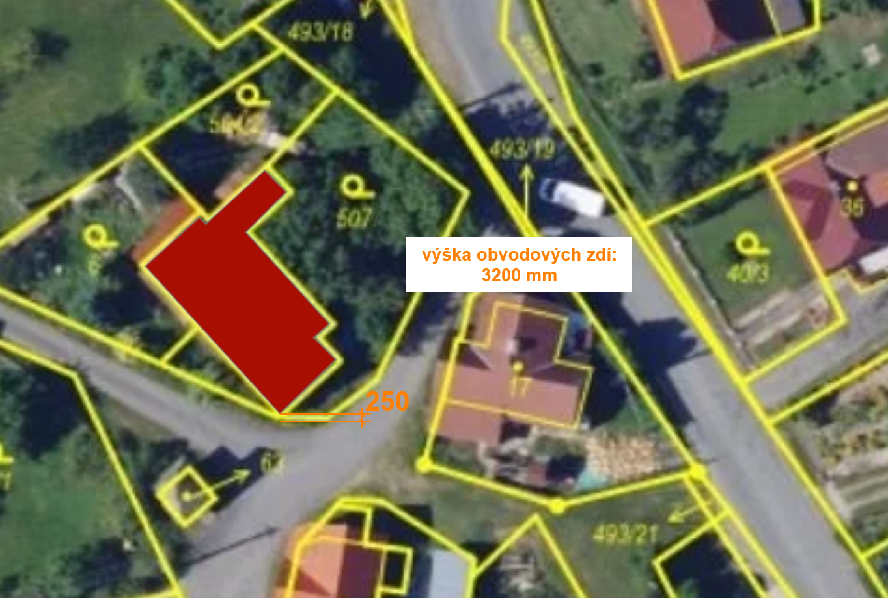
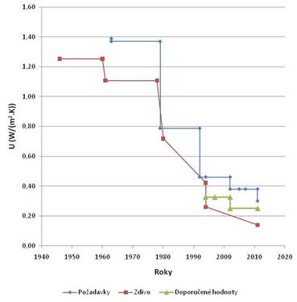

Pro běžného investora střední mzdové třídy navrhujete rekonstrukci domu postaveného v roce 1970 v Mělníku, který se nachází v blízkosti potoka. Cílem investora je snížit tepelné ztráty na úroveň pasivního standardu, ale zároveň musíte zvolit materiál vhodný na zateplení domu v záplavovém území. Investor chce i přes toto technické omezení volit ekologickou variantu zateplení. Kvůli rozměrům pozemku a umístění domu na hranici je ale problém s prostorem pro umístění izolace. Důležitá je také výsledná cena celého zateplení domu.

Obvod domu je 19,6 m. Tloušťka původního zdiva z obyčejných pálených cihel má půl metru.
Pro zvolení správné tloušťky je nutné vypočítat prostup tepla konstrukcí označovaný . Ten vyjadřuje množství tepla, které projde jeden metr čtvereční konstrukce při rozdílu teplot jednoho stupně mezi vnitřním a vnějším prostředím. Čím je tato hodnota menší, tím méně tepla se ztrácí, a proto je cílem izolovat tak, aby kleslo na požadované minimum. Současně je potřeba rozumět také tepelné vodivosti (lambda), která udává, jak rychle daný materiál propouští teplo. Materiály s nízkou lambdou jsou dobrými izolanty, takže jich stačí méně.

… prostup tepla
… součinitel prostupu tepla
… tloušťka materiálu.
Vaším úkolem je zvolit izolant tak, aby vyhovoval podmínkám investora a výsledná hodnota celé stěny dosáhla doporučených hodnot s prostupem tepla pro pasivní dům. Pro vyhodnocení použijte tabulky dostupné na tomto odkazu:
https://www.tzb-info.cz/tabulky-a-vypocty/140-vypocet-prostupu-tepla-vicevrstvou-konstrukci-a-prubehu-teplot-v-konstrukci
Posuzujte pouze tyto izolační materiály:
- XPS, = 0,040
- Dřevovláknitá deska, = 0,042
- Expandovaný korek, = 0,038
- Pěnové sklo, = 0,062
- Minerální vata, = 0,046